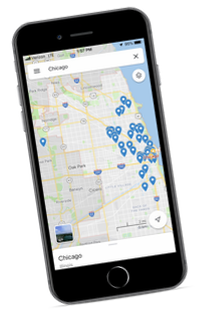
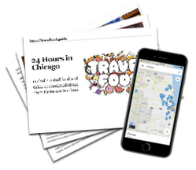
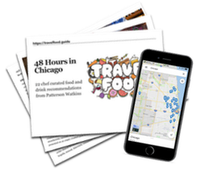
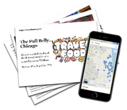

Chicago, Illinois
Grab your guide now! 3 versions available with up to 40+ chef-curated recommendations in Chicago.
You're going to taste your way through the Windy City! Chicago is one of the largest cities in the US, and sports a concentrated collection of the country's best restaurants (and in many cases, for a fraction of the price of cities like NYC and LA).
My Chicago lists are curated from over 50 locations, taking you to the most legit spots for local favorites like hot dogs and deep dish pizza. Gazing for Michelin stars? Chicago has some of the best and most unique fine dining experiences in the whole country! My guides include tips for getting the toughest reservations in the city.
Add in a smattering of breweries, cocktail bars, dive bars and comedy clubs for fun! Whether you're in Chicago for business or play, this city's diverse food scene has something for everyone: from extravagant dining to budget and wallet friendly finds and wherever where you are in the city you'll be very close to all things delicious.
Our curated Chicago food guides give you up to 50+ chef-selected options for delicious destinations complete with gastronomic descriptions, tantalizing tips, and convenient Google Maps shortcuts (one click and 'poof' you'll have our Google maps loaded onto your device so you always know the tastiest spots nearby).
24 Hour Chef's Guide to Eating & Drinking Chicago
Get the best out of your brief time in Chicago. In 24 hours you can lunch munch in a monstrous all-local food hall, sip cocktails on a rooftop overlooking Millennium Park and Lake Michigan and choose between either dinner at a Chicago steakhouse newcomer or one of the best restaurants in the world.
Also a couple more additions (added for maximum fun)- a fair sprinkling of snacks, a hot dog recommendation and a cozy bar that reminds me so much of Hogwarts that I'm pretty sure Hermione was our server/I saw a Quidditch trophy on display.
This 24 Hour Chef's Guide includes:
- delicious dining recommendations (including our TOP recommendations for lunch and dinner)
- intoxicating spots for drinks and snacks
- our favorite non-eating activities (lol) to get the best sense of the culture and city in your limited available time.
When you buy, you get a downloadable/printable guide to all 11 destinations, plus our easy-to-install Google Maps overlay.
New release price!
Get the 24 Hour Chef's Guide to Chicago for just $27 $17:
48 Hour Chef's Guide to Eating & Drinking Chicago
If you have enough time to get just outside of "the loop" (aka Chicago's downtown area) you'll want to explore even more mouthwatering possibilities in this amazing city. Don't worry, you don't need a car: all of these choices are easy to get to by public transit or your favorite ride-hailing service.
This guide expands our 24 hour guide to to 22 options, including the most memorable farm to table food experience you'll ever have, followed by after dinner drinks in an encyclopedic cocktail bar.
Then wake up and brunch on some of the best homemade Italian in Chi-town before taking in a comedy show and dive-bar beers.
This 48 Hour Chef's Guide includes:
- delicious dining recommendations (including our TOP recommendations for lunch and dinner)
- intoxicating spots for drinks and snacks
- our favorite non-eating activities (lol) to get the best sense of the culture and city in your limited available time.
When you buy, you get a downloadable/printable guide to all 22 destinations, plus our easy-to-install Google Maps overlay.
New release price!
Get the 48 Hour Chef's Guide to Chicago for just $37 $27:
THE FULL BELLY - A 1 Week Chef's Guide to Eating and Drinking in Chicago
The whopper of food and beverage recommendations in Chicago - 40+ chef-curated food and beverage recommendations in total (plus a few activities to help you burn off the calories). It's all here in our ultimate full belly guide!
If you're up for the challenge, this is the all inclusive list that even Cubbies and Sox fans will agree on.
This FULL BELLY guide to New Orleans includes:
- delicious dining recommendations (including our TOP recommendations for lunch and dinner)
- intoxicating spots for drinks and snacks
- our favorite non-eating activities (lol) to get the best sense of the culture and city in your limited available time.
When you buy, you get a downloadable/printable guide to all 40+ destinations, plus our easy-to-install Google Maps overlay.
New release price!
Get the FULL BELLY Chef's Guide to Chicago for just $47 $37:
Check out my other favorite Travel Food cities:
Special Thanks
Open Source "Travel Log" Website Design by Lauren Hallden.